The Climb's props, one by one: The War (floors 41 to 50)
2026-11-14. The user: "lets look at all props one by one and make the correct". Every kind was looked at on its own (the sheet at the end), every floor walked with the probe (pipeline/tools/climb-props-probe.js: every piece measured against the ground as drawn) and the shapes check (climb-shapes-probe.js: parts that do not meet), and each fault fixed at its cause, so every floor of the chapter gets it. Pictures: pipeline/tools/climb-props-shots.js, the same spot before (the branch's base, 281b428) and after; low views are a camera set down beside the prop, the others the game's own camera.
Nothing else moved: every scene of the thirty floors is where it was (scene lists compared floor by floor, 0 differences), the fights are the same (the perf tool's fight prints 45b46573, 988f012d, da05c457 on floors 21, 31 and 41 before and after), and no fix makes a new object on the game's random stream.
The probe, before and after (walkable ground and the edge, all ten floors)
| What | Before | After |
|---|---|---|
| Things in the air (no point within 5 cm of the ground) | 300 | 32 |
| Pieces standing on the ground with light under one side | 133 | 352 |
| Pieces of the depth or the scenes through cover | 1 | 1 |
What is left is listed under "Seen but left" with the reason.
The faults (10)
Planted spears (ridges, the camp's rack)
Wrong: The shaft leaned, the head stood straight up over its foot: heads beside their shafts' tops.
Cause: The head did not take the shaft's lean.
Fix: One lean for both (the same two draws, in order).
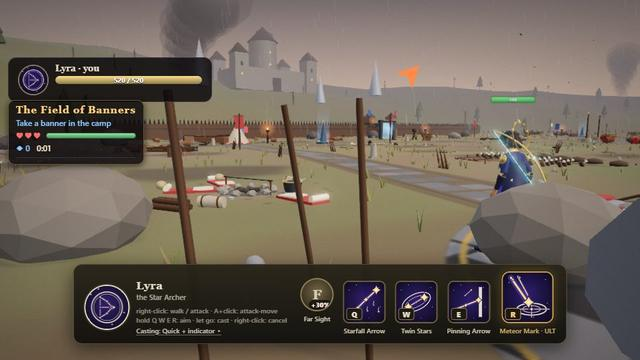
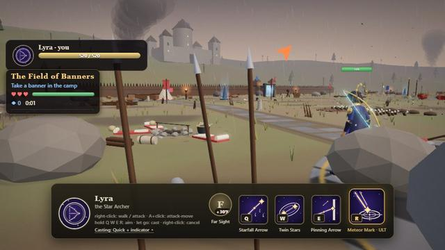
Fascines before the siege line
Wrong: The bundles hung 18 cm in the air.
Cause: Their lower row was placed 18 cm up.
Fix: On the ground.
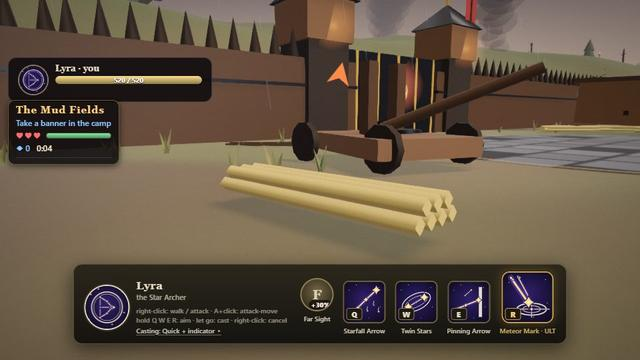
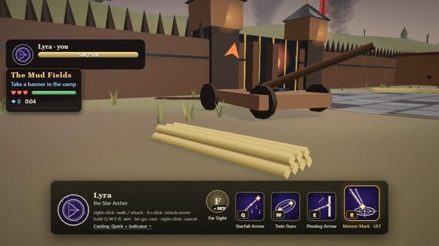
Drums on the hill
Wrong: The band in the side's colour was turned apart from its drum and crossed it.
Cause: Two random turns.
Fix: One turn for both (the second draw kept).
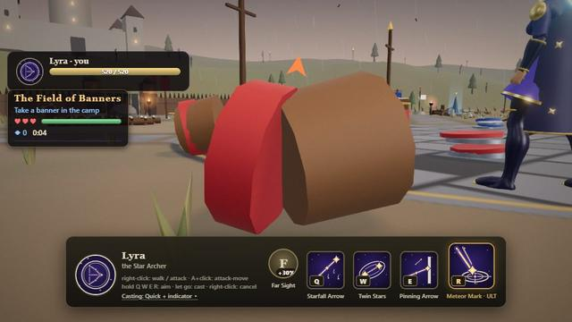
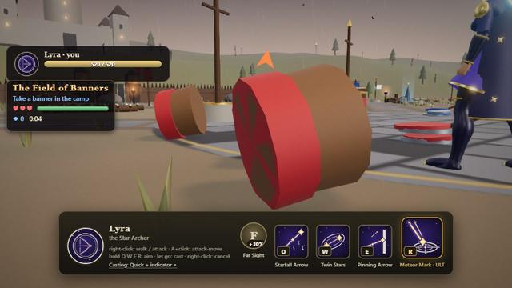
Washing line at the field hospital
Wrong: The line ran across its two posts, so the sheets hung in the air.
Cause: The line was turned a quarter turn off.
Fix: Along its posts, under the sheets.
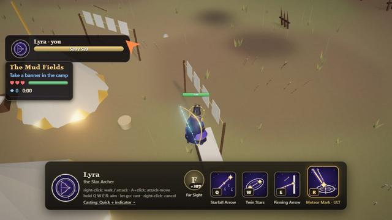
Cooking pot on its tripod (camp)
Wrong: The legs leaned sideways past the pot instead of meeting over it.
Cause: The lean's two angles swapped.
Fix: The legs lean in and meet over the pot.
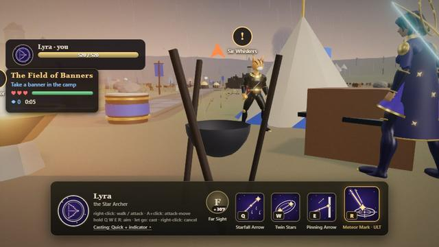
Great shields on their sill (cover)
Wrong: The shields stood 5 cm above the sill.
Cause: Placed 5 cm up; the bosses did not lean with them.
Fix: On the sill, each boss with its shield.
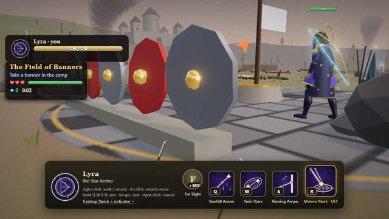
The hedge of stakes along the edge
Wrong: The lashing hung 0.2 m in front of the stakes, in the air; on the bank the outer stakes stood off the slope.
Cause: The lashing was placed at the stakes' feet, not where they lean to; one height for all three stakes.
Fix: The lashing on the stakes; each stake on its own ground, deeper in the bank.
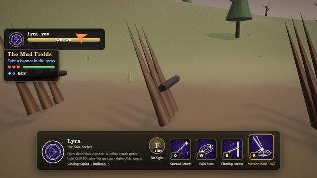
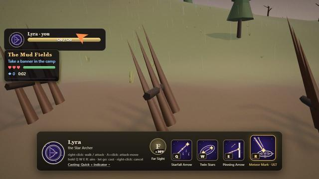
Shield pile (cover)
Wrong: The pile hung 6 to 10 cm above the ground.
Cause: The first shield placed 10 cm up.
Fix: On the ground and on each other.
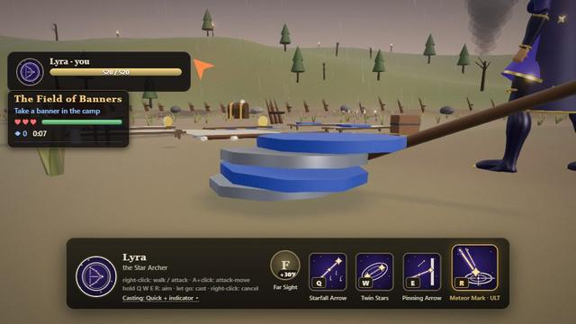
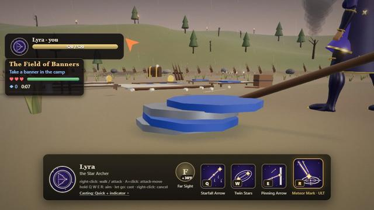
Graveyard of cairns (past the edge)
Wrong: Each sword stood 0.45 m behind its cairn, its blade's foot in the air.
Cause: The sword's place copied from the other layout (graves, sword at the head).
Fix: Each sword stuck in its cairn's top.
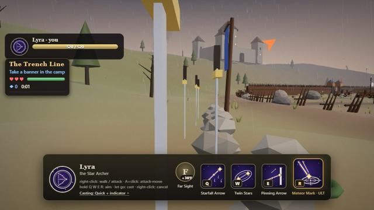
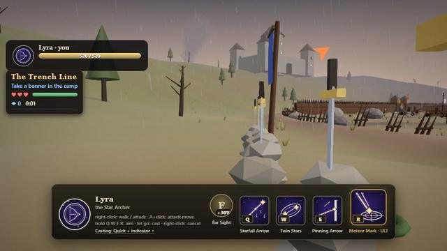
The smithy's anvil and grindstone
Wrong: The anvil's horn stood 7 cm off its face; the grindstone floated in its frame with no axle.
Cause: Horn a hand's breadth off; no axle drawn.
Fix: Horn on the anvil; an iron axle on the legs.
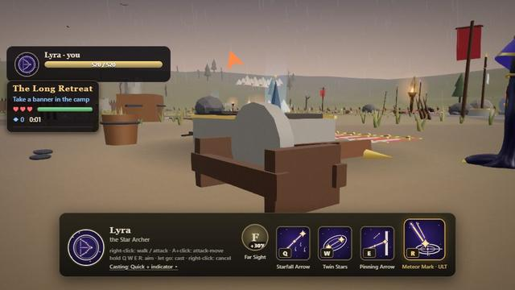
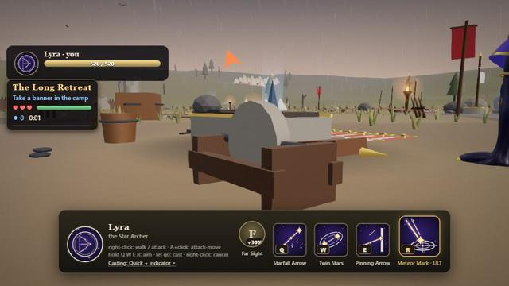
The smithy's anvil (the same fix)
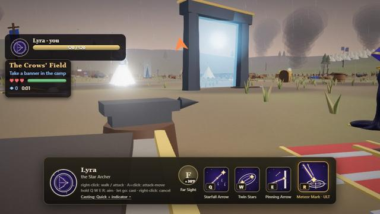
Seen but left
- Scenes past the edge (tents, a farmhouse, a watchtower's planks) stand 15 to 30 cm off the hills on their downhill side. Dropping each part to the lowest ground under it sank a farmhouse wall into its hill and left the beam it holds 4 m in the air, so that was undone; it needs one drop for the whole scene.
- Grass tufts on the bank at the edge, 5 to 13 cm above the drawn ground (the same cause as the Sands' shrubs).
- The far camps (50 to 110 m out) and the enemy keep's banners (inside its roof, 60 to 85 m north of the siege line): never in a player's view.
- The hedge's lashings now touch the bank at one end: the probe counts that as a gap, but they are held by the stakes.
- Tall things of the depth on walkable ground (banners on poles, the washing line, spear racks) were left: only the scenes' rules ask for knee height, and the scenes keep to them.
- The siege ladders broken at the foot of a wall (ladder scenes) were not looked at from the side closely enough to say their stub touches the wall.
Every kind, and where it is built
- Scenes (scenes/war.ts, the kinds' builders, parts from `S`)
- aftermath, last stand, cookfire, smithy, hospital, engine, graves, depot, stakes, saddle, satchel, trench, ram, drums, smoulder, captured, stores; against walls the ladder; past the edge farmhouse, tents, graveyard, watchtower; the trail echoes
- The depth (warDepth.ts `buildWarDepth`)
- roads: milestones, banners, verge stakes, broken carts, arrows; places: ridge spears and helmets, the works' stone shot, timber and rope, the wagons' barrels and planks, the hill's drums and poles, the siege's fascines and ladders, the farm's beams, well and fence, the hospital's cots, washing line and baskets, the keep's rubble, the camp's logs, bedrolls, spear rack and tripod pot; the field's grass, volleys, helmets, spears; far: trees, the two camps, watch fires, the enemy keep, smoke, crows
- The zone's cover and dressing (warZone.ts)
- boulders, rubble, shield piles, sacks, cots, crates, drums, hay, barrels, army and white tents, braziers, standards, catapults, stakes, gate towers, posts, the great shields' sill, fences, walls, the palisade, burned walls, a fallen siege tower, a wagon on its side, the mill, the keep's tower; braziers at the places; the hedge of stakes along the edge
The sheet: every scene kind on its own (the game's camera with the hero beside it, then low)
One of each kind and layout, in place on a floor of the chapter (the Sands and the Deep two of each, on two floors). Looked at one by one; what was wrong is in the faults above.
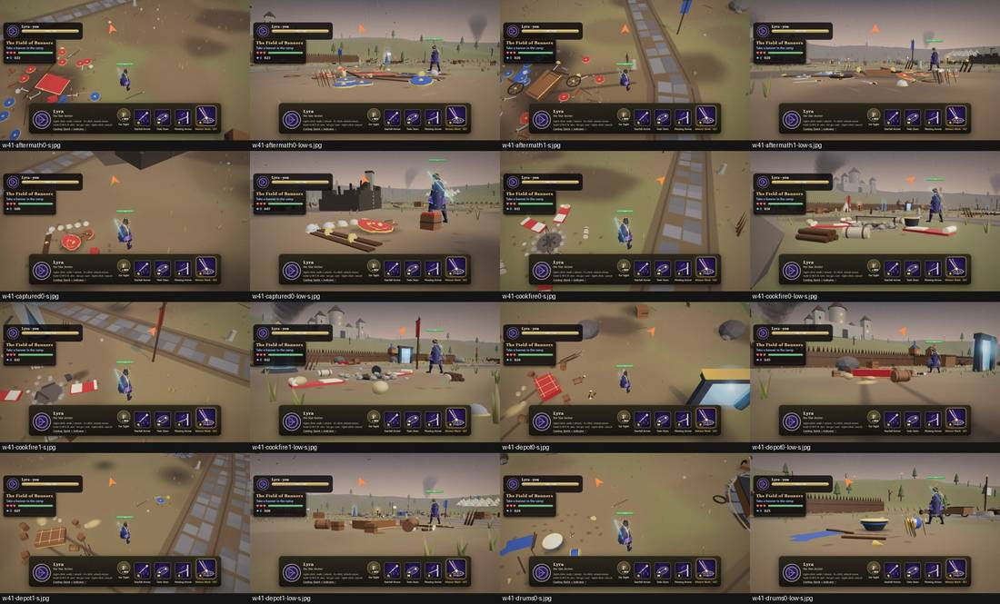
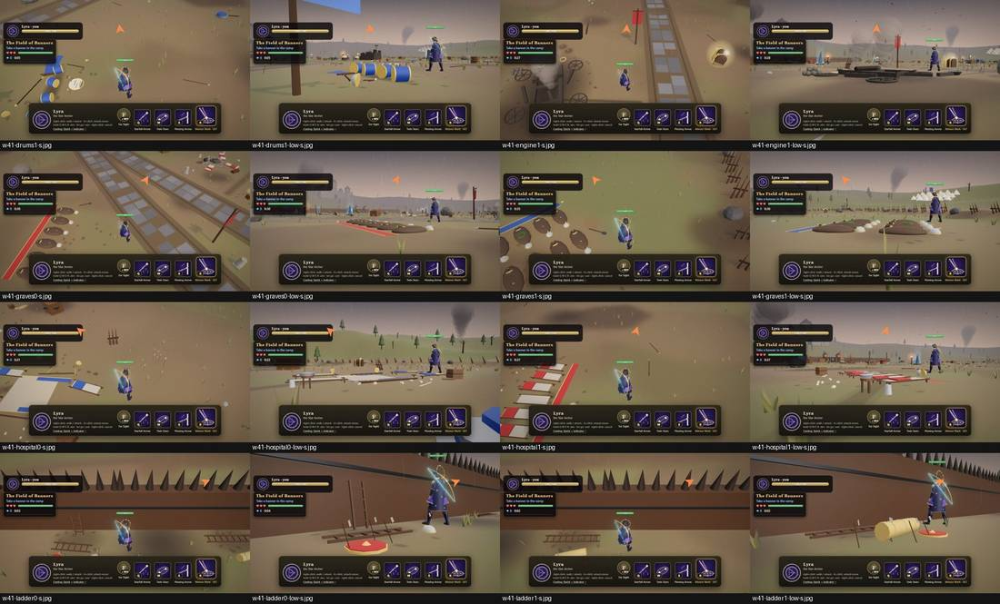
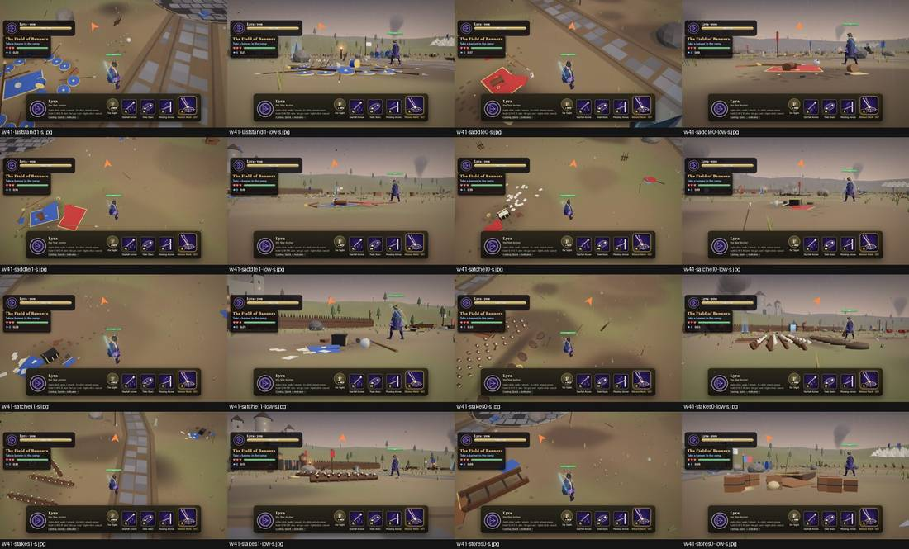
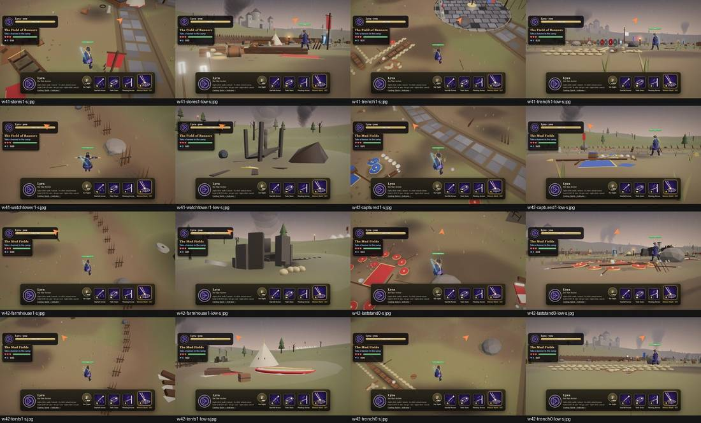
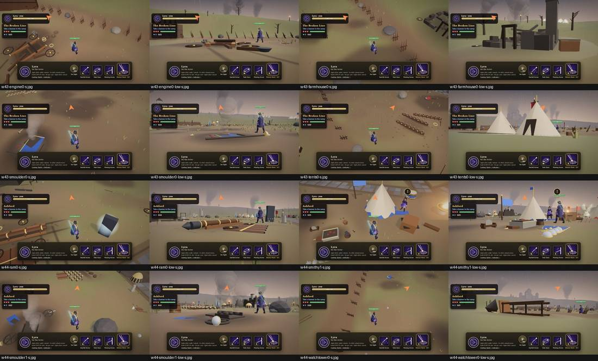
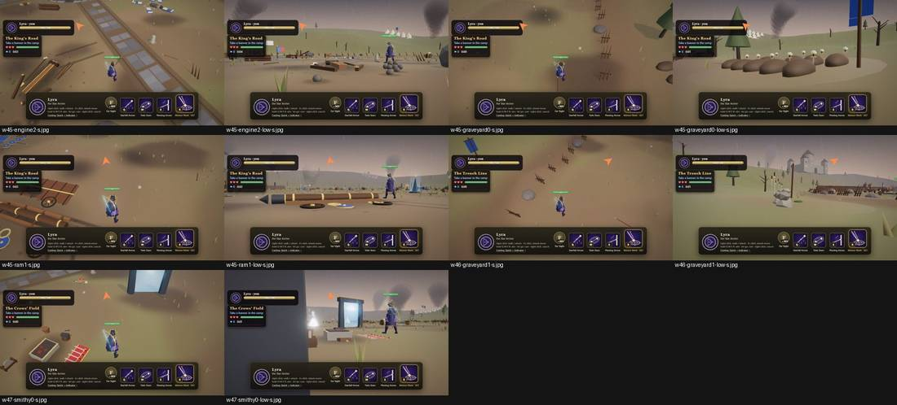